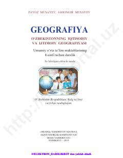

OI8-sinf o‘quvchilari uchun O‘zbekistonning iqtisodiy va ijtimoiy geografiyasi bo‘yicha darslik.
Ushbu darslik umumiy o‘rta ta’lim maktablarining 8-sinf o‘quvchilari uchun mo‘ljallangan bo‘lib, O‘zbekistonning iqtisodiy va ijtimoiy geografiyasi asoslarini o‘rgatadi. Kitobda mamlakat iqtisodiyoti, aholi joylashuvi, tabiiy resurslardan foydalanish va ishlab chiqarishni hududiy tashkil etish masalalari yoritilgan.